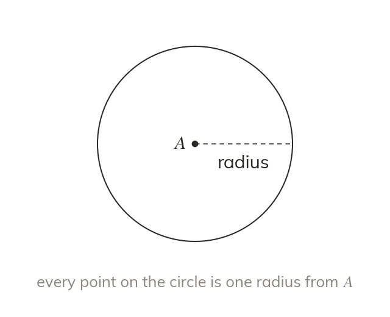

Loci and equidistant
A locus is every point that fits a rule. Equidistant means the same distance from. Compasses draw a circle, the locus of a fixed distance.
A locus is the set of all points that satisfy a rule - for example, 'exactly cm from point A.' Equidistant means 'the same distance from.' Compasses draw a circle: the locus of every point a fixed distance (the radius) from the centre.